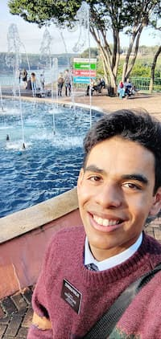

Alefe Queiroz | WDD 130
Hi! My name is Alefe Queiroz. I'm from Fortaleza, Brazil. I enjoy hanging out with friends, watching movies, and listening to music. I'm excited about this Web Development course.
Hi! My name is Alefe Queiroz. I'm from Fortaleza, Brazil. I enjoy hanging out with friends, watching movies, and listening to music. I'm excited about this Web Development course.